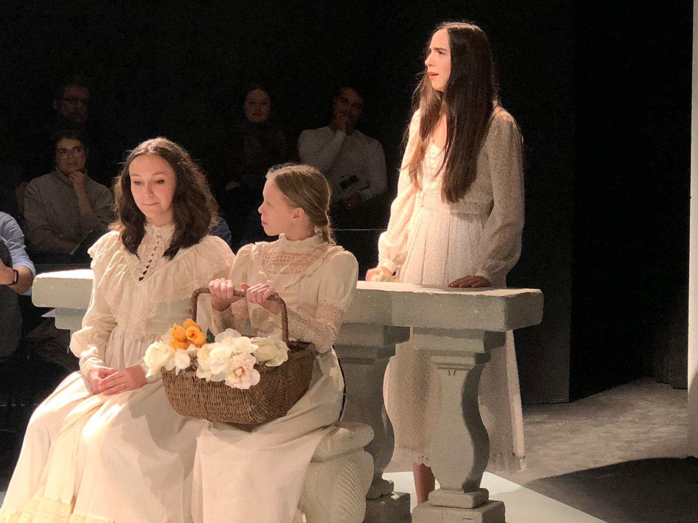

About Me!
General Information
My name is Sofia La Rosa, I am 16 years old, and I was born in Seattle, Washington.
Fun Facts!
- I am a native Spanish speaker as both of my parents are from South America.
- My favorite board game is Setlers of Catan
- I have an older brother
Academic Interests and My Experience at Annie Wright Schools
I have attended Annie Wright Schools for 13 years and I absolutely love it. Not only are the teachers passionate about teaching their students, but they also care for everyone in the AWS community. Another aspect that I love about the school is the opportunities and community. Annie Wright is a diverse and accomodating place for everyone of different ethnicities, interests, religions, and gender. Not only do they accept each student and help them become better people through their teaching and understanding of the world, they help them explore their personal passions and find interests in different areas in which they might have overlooked. With the opportunities Annie Wright has to offer, I'm able to learn new topics with a more deeper understanding of the hows and whys. Although I love all of my classes, my favorite classes are:
- Computer Science
- Chemistry
- History
My Passions
Although I am very focused on my academic studies, I am very passionate about the arts. I play multiple instruments, write songs, am a member of the Tacoma Youth Symphony, do theatre and musical theatre both in and out of the school, and I sing. Some of the instruments I play are:
- Piano
- Violin
- Ukulele
- Guitar
Here is a picture taken at the school's production of Much Ado About Nothing where I played Beatrice.


Favorites
- My favorite flower is the Rose
- My favoirte breakfast food is an Arepa
- Faouzia is my favorite music artist at the moment
- One of my favorite musicals is Phantom of the Opera
Here is a clip from the Phantom of the Opera. This recording was done for their 25th anniversary performance at the Royal Albert Hall.